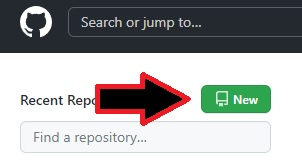
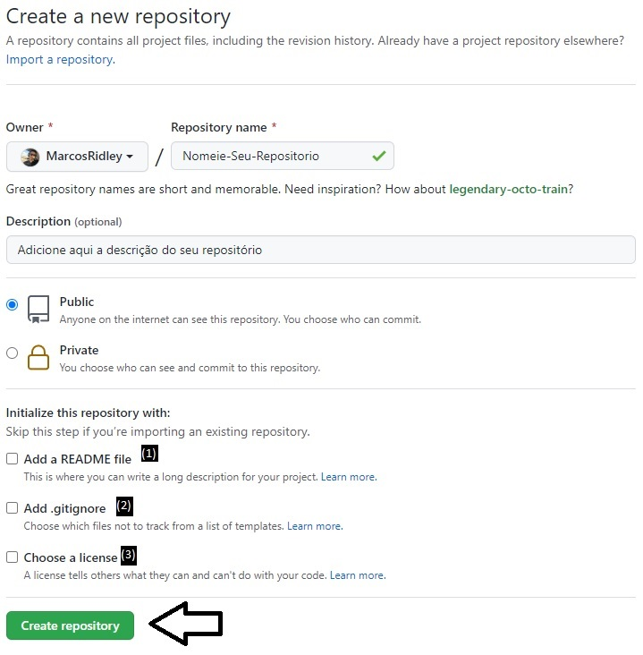
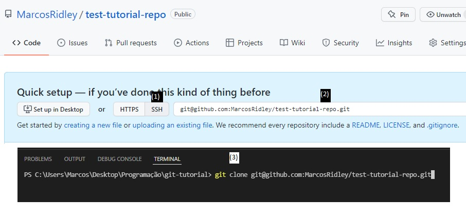
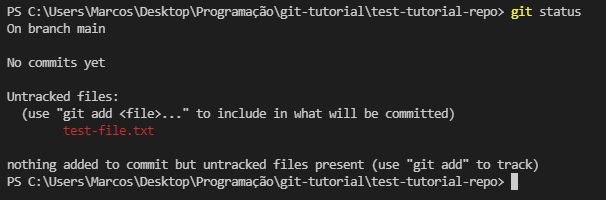
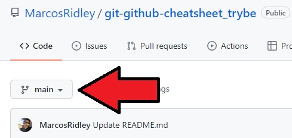
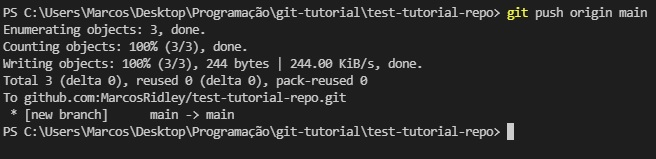

#01 Entendendo as diferenças
Git: Ferramenta de versionamento de código.
GitHub: empresa privada onde podem ser hospedados repositórios
#02 Criando um novo repositório e trabalhando SOLO
Entre na página do seu perfil e clique em New
#03 Preencha os dados do seu repositório
- Permite que você adicione um arquivo README.md no seu repositório. Esse arquivo é utilizado como capa para seu repositório no GitHub. Crie sempre com README pois, além de ser prático poder editar o README antes mesmo de começar a escrever seu programa, ele inadvertidamente facilita os próximos passos.
- Permite que você adicione um arquivo .gitignore no seu repositório. Esse é um arquivo de texto no qual você pode escrever nomes de arquivos e diretórios que serão ignorados pelo gerenciamento do Git.
- Permite que você escolha uma licença pela qual publicar seu código. Licenças podem ser livres ou proprietárias. Não é interessante no momento.
#04 Clone o repositório
- Marque aqui para utilizar sua SSH
- Copie o código informado
- Utilize o comando git clone -link- para clonar o repositório remoto para sua máquina
Por que fazer dessa maneira: utilizando o comando clone ao invés de dar git init e vincular o repositório remoto com git remote você tem uma margem de erro muito menor.
Parabéns, seu repositório do GitHub está vinculado a sua pasta local!
Caso tenha problemas com autenticação verifique seu cadastro da SSH seguindo o tutorial no final da página#05 Adicionando itens pra Staging Area do Git
Ao fazer qualquer alteração na pasta local, utilize o comando git status para confirmar que o Git detectou a mudança.
Utilize o comando git add -nomeDoArquivo- para adicionar o arquivo a Staging Area do Git
A Staging Area do git é o local no qual alterações são preparadas para o commit. É possível utilizar git add . para adicionar todos os arquivos no diretório que não estejam sendo ignorados pelo .gitignore
#06 Realizando o Commit
Utilize o comando git commit -m "mensagem" para realizar o commit do seu repositório naquele determinado momento
O commit nada mais é do que uma "foto" tirada pelo Git para qual você pode retornar a qualquer momento - um ponto de restauração de sistema, digamos assim
#07 Realizando o Push
Primeiro de tudo, assegure-se de qual o nome da sua branch principal. Alguns sistemas utilizam a branch "Master" e alguns utilizam a branch "Main". Ela será a branch principal do seu repositório, criada no momento que você criou o próprio repositório.
Imagem: se você seguiu o tutorial a risca, a seta aponta para o nome da sua branch main. Para garantir que sua branch principal ao criar um novo repositório seja sempre main, utilize o comando git config --global init.defaultBranch main no terminal.
Utilize o comando git push origin -nomeDaSuaBranch- para enviar para o GitHub os dados da sua pasta local.
Pronto! Seus dados serão enviados para o GitHub e podem ser verificados diretamente no link do seu repositório.
Será adicionado mais conteúdo aqui ao longo do curso de acordo com a necessidade das aulas.
Não tem ainda o cadastro da sua SSH no GitHub?
- Primeiro de tudo vamos criar a chave. ssh-keygen -t rsa -b 4096 -C "seuemail@gmail.com" e saia dando enter até voltar terminar a criação .
- Depois de criado, vamos pegar a chave para inserir no Github. cat ~/.ssh/id_rsa.pub .
- Se copiou tudo que apareceu no terminal, é só adicionar Nesse link.